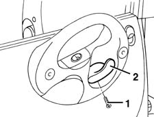

7010C42 inner handle of rear side door mechanism(1) lh or rh - r r
- Path
- Procedures > 70 FITTINGS > 7010 PASSENGER COMPARTMENT REAR SIDE DOORS > 7010C rear lock controls > 7010C42 inner handle of rear side door mechanism(1) lh or rh - r r
- Kind
- repair procedure (removal / refitting; the operation number is the code)
- Applies to
- all engines; all production periods
- Interactive page
- https://sloeber94.github.io/elrnDB-fMltpl/en/#/2892078
Applies to: all engines; all production periods
 Removing
Removing
 Refitting
Refitting1. Undo the bolt.
2. Disconnect the handle.

Applies to: all engines; all production periods
Refitting
RemovingCheck that the handle is undamaged.
Fit the handle and tighten the bolt.
Test to check the interior handle and catch are working properly.
Topics that link to this page (15)
- P02 REAR DOOR CLOSING DEFECTIVE
- 5505B21 rear door wiring - r r
- 7010A05 rear side door water guard protection-r r or arrange
- 7010C11 rear side door outside handle-r r
- 7010C51 rear side door inner catch return device - r+r for repair or replacement
- 7010C67 rear side door safety catch link-r r
- 7010D15 rear side door descending window glass-r r
- 7010D23 rear side door descending window glass guide one-r r
- 7010D30 rear side descending window glass scraper (inner) r r
- 7010D35 rear side door manual window glass-r r
- 7010E10 rear side door inner panel - r r or replace
- 7010E38 rear side door interior handle-r r
- 7010M21 rear side door electrically-operated window-r r
- 7010M25 lh rear side doorelectrically-operated window mechanism-check position and fastening
- 7010N21 rear side door lock motor-lock assembly r r